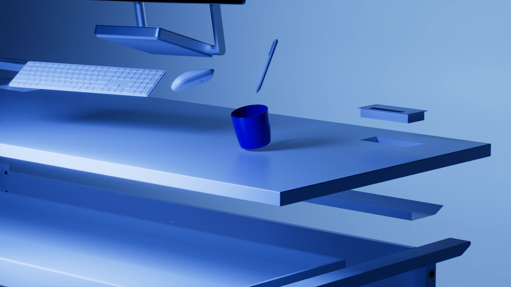
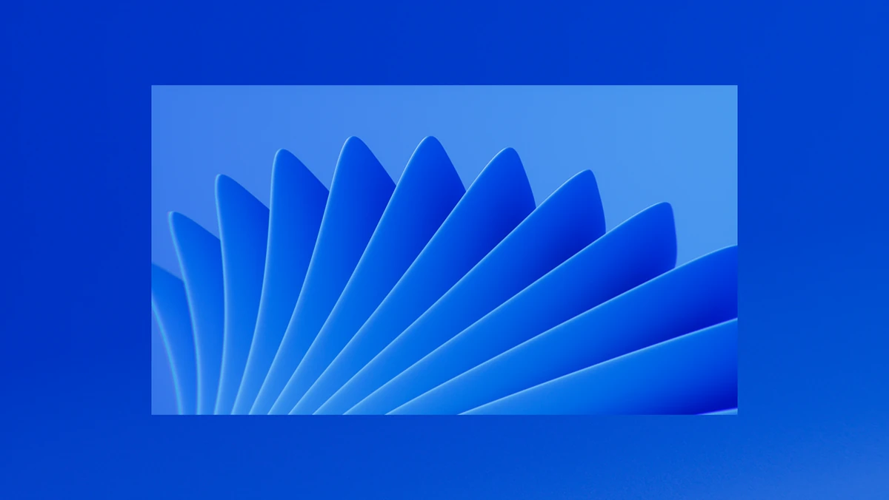
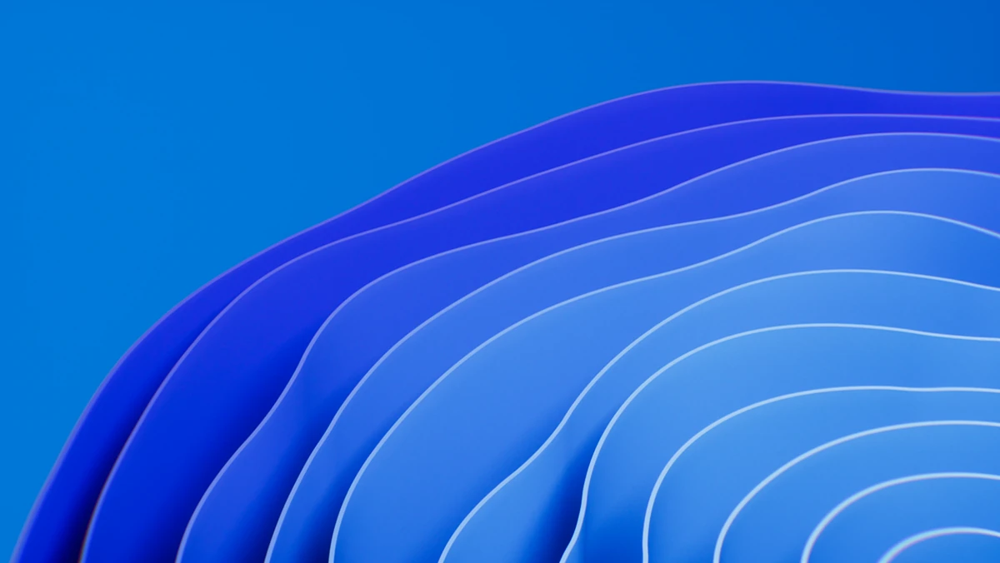
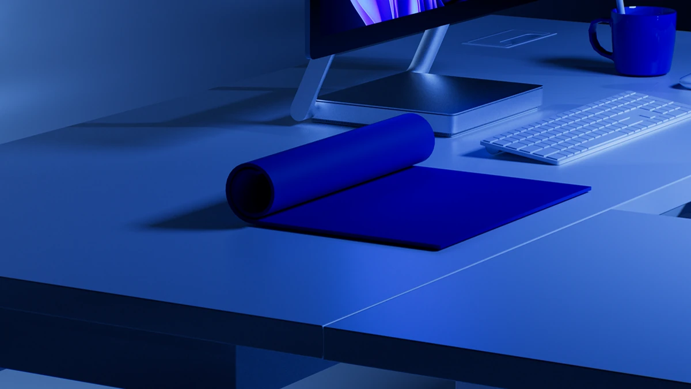

3D motion project around the Windows visual identity — an exploration of the brand's emblematic geometric shapes in an immersive CGI environment. The logo's four colors become animated reflective surfaces, playing with light and depth of field. The art direction merges graphic heritage with a contemporary visual language. A premium reinterpretation of a digital design icon.



